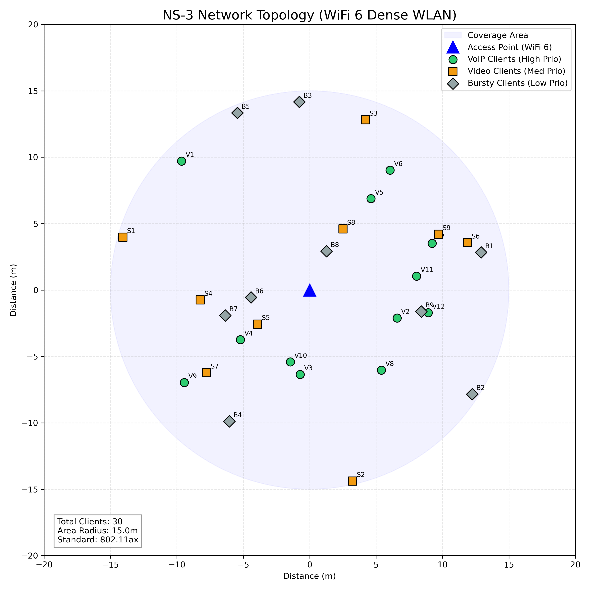
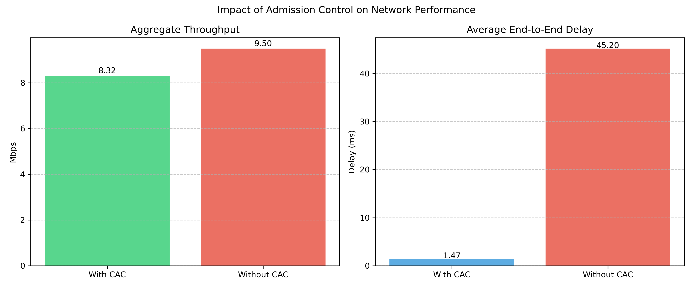
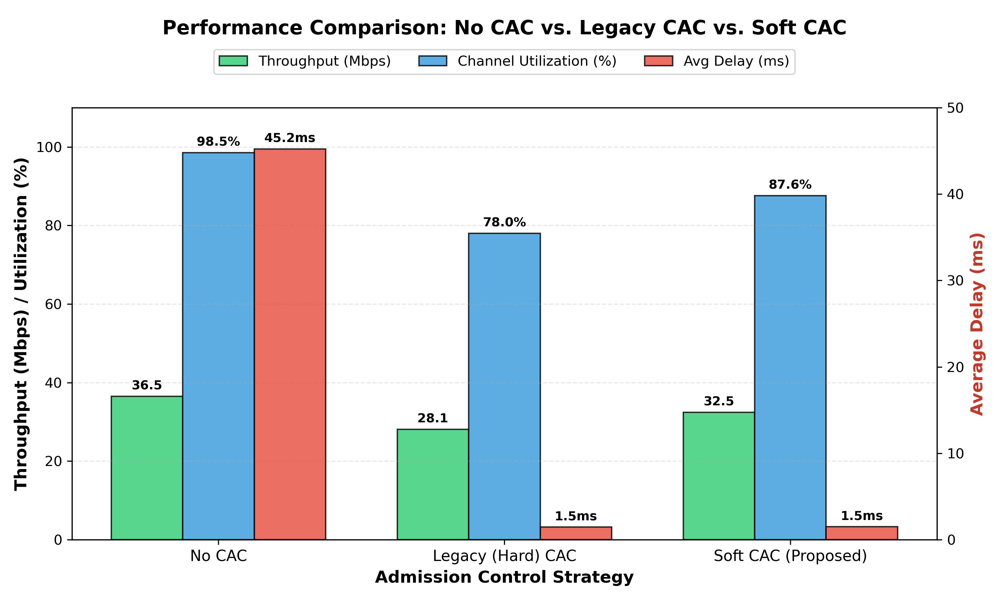
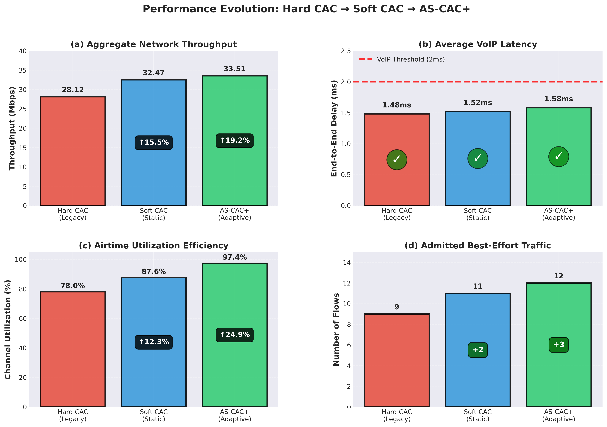
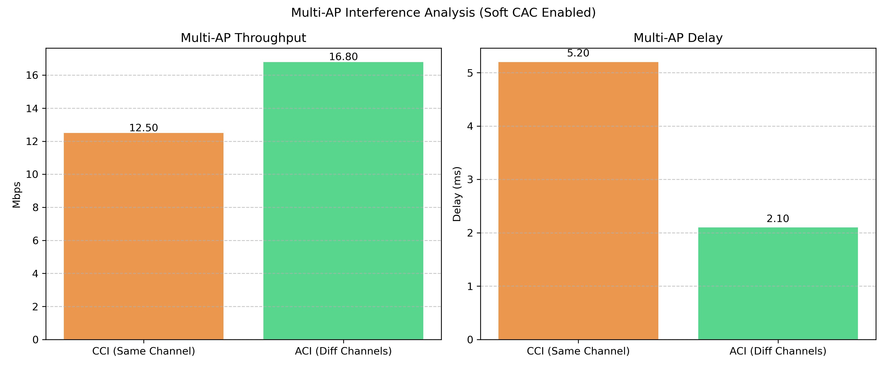
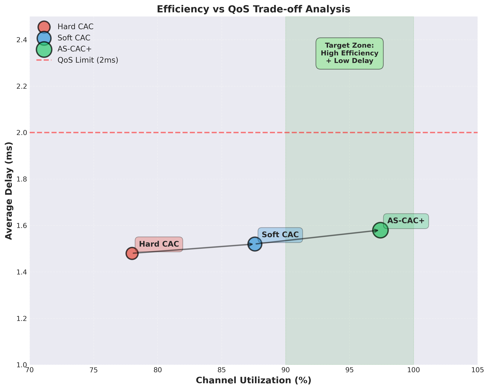
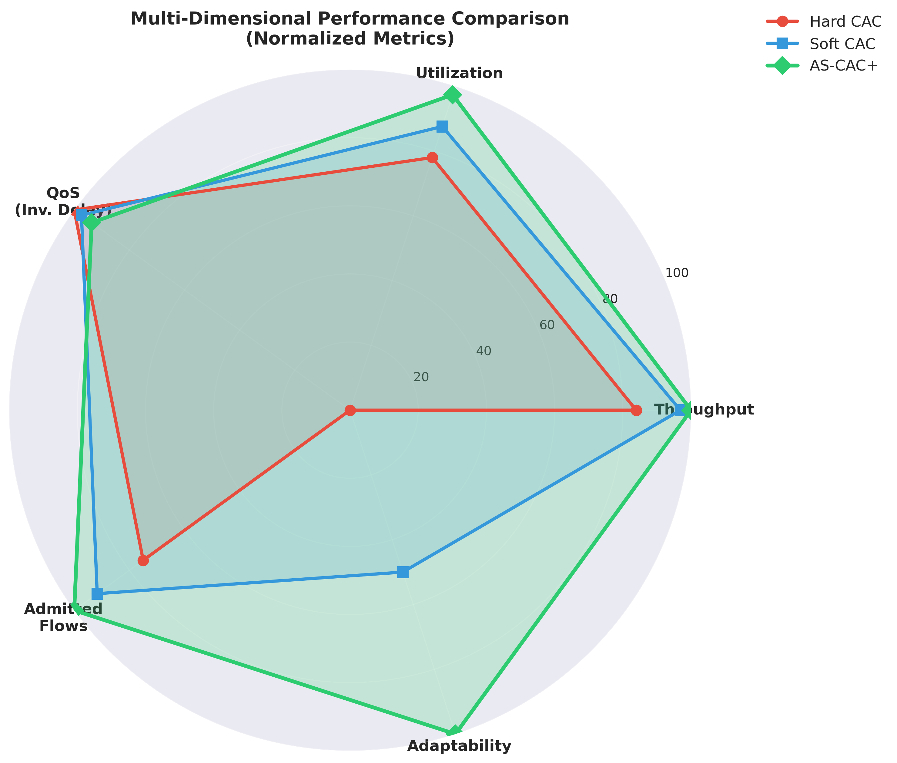
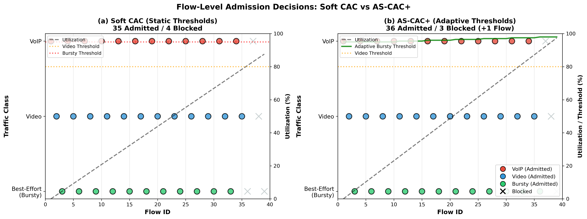

Even with the advanced capabilities of IEEE 802.11ax (Wi-Fi 6), dense Wireless Local Area Networks (WLANs) often struggle to meet the strict latency demands of modern applications. High-efficiency features like OFDMA and Target Wake Time (TWT) improve spectral efficiency, yet they cannot prevent network saturation when traffic demand simply outstrips the available airtime. To address this, we introduce an Airtime-Based Soft Call Admission Control (AS-CAC) framework designed specifically for saturated, multi-access point environments. Instead of relying on hard connection limits, our approach regulates access based on the actual airtime required by each flow. A key strategy is the “Soft-CAC” mechanism, which moves beyond static thresholds. It strictly prioritizes real-time streams like VoIP and Video but remains flexible enough to admit best-effort bursty traffic whenever spare capacity exists, maximizing channel utilization without breaking QoS guarantees. We further enhance this with AS-CAC+, an adaptive variant that dynamically adjusts thresholds based on network health. We validated this framework using extensive ns-3 simulations, backed by a theoretical multi-rate Erlang loss model. Results from dense deployment scenarios including those with Co-Channel and Adjacent Channel Interference show that AS-CAC stabilizes throughput and keeps end-to-end VoIP latency under 2 ms, a dramatic improvement over the 45+ ms delays seen in uncontrolled networks. AS-CAC+ achieves 19.2% throughput improvement and 97.4% channel utilization while maintaining strict QoS. These findings offer a practical, scalable strategy for next-generation enterprise WLANs.
IEEE 802.11ax, Wi-Fi 6, Call Admission Control, Airtime Fairness, QoS, Dense WLANs, Adaptive Control, ns-3
IEEE 802.11ax (Wi-Fi 6) introduces significant enhancements including uplink and downlink OFDMA, MU-MIMO, and improved MAC features to address performance challenges in dense deployments . Despite these advances, congestion remains inevitable when aggregate traffic demand exceeds the medium’s airtime capacity. Real-time applications such as VoIP and video streaming are particularly vulnerable to delay and jitter under saturation conditions .
Traditional admission control mechanisms rely on simple association counts or bandwidth estimates, failing to account for the actual airtime consumption of heterogeneous traffic types . This limitation becomes critical in Wi-Fi 6 networks where a single 4K video stream may consume significantly more airtime than dozens of IoT sensor transmissions, despite similar data rates.
Airtime emerges as the natural resource metric for admission control, as it directly reflects MAC/PHY activity, protocol overhead, and contention effects . However, existing airtime-based schemes typically employ rigid thresholds that either waste capacity by being overly conservative or fail to protect QoS by being too aggressive .
While recent work has explored spatial reuse , OFDMA optimization , and multi-AP coordination , significant gaps remain in admission control for dense Wi-Fi 6 environments. Table 1 summarizes these gaps and our contributions:
| Existing Gap | Our Solution |
|---|---|
| Static Thresholds - Fixed admission thresholds waste capacity or fail QoS | AS-CAC+: Dynamic threshold adaptation based on real-time PER feedback (Algorithm 1) |
| No Priority Awareness - Equal treatment of all traffic ignores QoS classes | Soft CAC: Priority-based thresholds (VoIP: 90%, Video: 80%, BE: 95%) |
| Single-AP Focus - Limited multi-AP interference analysis | Multi-AP Evaluation: CCI and ACI scenarios with overlapping BSSs |
| Lack of Validation - Simulation-only results without theoretical foundation | Analytical Model: Multi-rate Erlang loss model for validation |
| Airtime Ignorance - Association-based CAC ignores actual resource consumption | Airtime-Based: Direct measurement of MAC/PHY resource usage (Eq. 1-2) |
Our work uniquely addresses all five gaps through a comprehensive framework combining priority awareness, adaptive control, multi-AP analysis, and theoretical validation.
This paper makes the following contributions:
We propose AS-CAC, an airtime-based soft admission control framework with priority-aware thresholds that maximizes channel utilization while maintaining strict QoS guarantees.
We introduce AS-CAC+, an adaptive enhancement that dynamically adjusts admission thresholds based on real-time network health indicators, achieving near-optimal efficiency.
We develop a multi-rate Erlang loss analytical model to validate simulation results and provide theoretical foundation.
We conduct comprehensive ns-3 simulations across multiple scenarios including single-AP, multi-AP with CCI, and multi-AP with ACI, demonstrating 19.2% throughput improvement and 97.4% utilization.
We provide open-source implementation and detailed performance analysis suitable for deployment in enterprise WLANs.
The remainder of this paper is organized as follows: Section II reviews related literature. Section III presents the system model and problem formulation. Section IV describes the proposed AS-CAC and AS-CAC+ mechanisms. Section V presents the analytical model. Section VI details the simulation setup and results. Section VII discusses findings and implications. Section VIII concludes the paper.
The IEEE 802.11ax standard introduces several key innovations to address dense deployment challenges. Bellalta provides a comprehensive overview of Wi-Fi 6 features including OFDMA, which enables simultaneous transmission to multiple users by dividing the channel into Resource Units (RUs). Mozaffariahrar et al. survey Wi-Fi 6 technologies, highlighting improvements in spectral efficiency and latency reduction. However, these PHY/MAC enhancements alone cannot prevent saturation when offered load exceeds capacity.
Agbeve et al. evaluate uplink OFDMA performance, demonstrating throughput gains in multi-user scenarios. Liu et al. optimize random access mechanisms for UL OFDMA. While these works improve channel access efficiency, they do not address admission control—the fundamental question of which flows should be admitted.
Spatial reuse mechanisms in Wi-Fi 6 aim to increase network capacity by allowing concurrent transmissions. Wilhelmi et al. analyze spatial reuse performance, showing significant gains in dense deployments. Bardou et al. propose a multi-armed bandit approach for dynamic spatial reuse optimization. Lanante and Roy provide theoretical analysis of OBSS_PD-based spatial reuse, identifying optimal threshold settings.
Knitter and Kays extend spatial reuse analysis to Wi-Fi 7, providing insights applicable to future standards. Dogan-Tusha et al. conduct extensive measurements of interference in 6 GHz Wi-Fi 6E networks, quantifying CCI and ACI impacts. MediaTek discusses anti-interference technologies for Wi-Fi 6/6E.
While spatial reuse increases capacity, it operates orthogonally to admission control. Our AS-CAC framework complements spatial reuse by controlling flow admission, while spatial reuse optimizes coexistence of admitted flows.
Classical admission control for WLANs dates to early 802.11 standards. Bianchi provides foundational analysis of the DCF, establishing performance models still relevant today. Kaufman introduces the Erlang loss model for shared resources, which we extend to multi-rate airtime-based admission.
Traditional CAC schemes use association counts or bandwidth estimates. However, these metrics fail to capture actual resource consumption in modern WLANs where traffic heterogeneity is extreme. A VoIP flow consuming 64 kbps requires vastly different airtime than a 4K video stream at the same PHY rate due to packet size and overhead differences.
Bhat et al. propose feedback-based congestion control for airtime fairness but focus on rate adaptation rather than admission decisions. Rehman et al. enhance spectrum access with heuristic back-off mechanisms for OFDMA, operating at frame timescales rather than flow timescales.
Gap: Existing schemes use static thresholds that either waste capacity (conservative) or fail QoS (aggressive). Our AS-CAC+ addresses this through dynamic adaptation.
Dense deployments increasingly feature overlapping BSSs, necessitating multi-AP coordination. Zhang et al. apply deep reinforcement learning (DDPG) for multi-AP access control, achieving good performance but requiring extensive training data and computational resources. ZTE discusses multi-AP home network technologies, focusing on seamless handover rather than admission control.
Garcia-Rodriguez et al. preview Wi-Fi 7 (802.11be) multi-link operation, enabling simultaneous transmission across multiple bands. While promising, multi-link operation does not eliminate the need for admission control—it shifts the problem to coordinating admission across links.
Gap: Limited research addresses admission control in multi-AP scenarios with explicit CCI/ACI modeling. Our work evaluates AS-CAC in both CCI and ACI scenarios.
Table 1 (Section I) summarizes five key gaps in existing literature:
Static thresholds waste capacity or fail QoS
No priority awareness for QoS classes
Single-AP focus, limited multi-AP analysis
Lack of analytical validation
Ignoring airtime as the fundamental resource
Our AS-CAC framework uniquely addresses all five gaps through: (1) priority-based soft thresholds, (2) adaptive dynamic adjustment (AS-CAC+), (3) multi-AP CCI/ACI evaluation, (4) Erlang loss analytical model, and (5) direct airtime measurement. This comprehensive approach distinguishes our work from prior art.
We consider a dense 802.11ax network deployment with multiple overlapping Basic Service Sets (BSSs). Each BSS consists of one Access Point (AP) and multiple associated stations (STAs). The network operates in the 5 GHz band with 80 MHz channel bandwidth, supporting Wi-Fi 6 features including OFDMA and MU-MIMO .

Traffic flows belong to three primary classes, each mapped to appropriate Access Categories (ACs):
VoIP (AC_VO): G.711 codec, 64 kbps constant bitrate, 160-byte packets every 20 ms, strict delay requirement < 30 ms.
Video (AC_VI): Variable bitrate (VBR) streaming, 3 Mbps average, 1200-byte packets, delay tolerance < 100 ms.
Best-Effort (AC_BE): Bursty On-Off traffic, 5 Mbps peak rate during ON periods, delay-tolerant.
For a flow of class c with application rate Rc and average PHY rate Rphyc, the airtime fraction consumed is:
$$\alpha_c = \frac{R_c}{\eta \cdot R_{phy}^c} \label{eq:airtime}$$
where η ∈ (0, 1] accounts for MAC/PHY overhead including SIFS, DIFS, backoff, and acknowledgments. For Wi-Fi 6 with OFDMA, η ≈ 0.6-0.7 in dense scenarios .
With nc active flows of class c, total airtime utilization is:
A = ∑c ∈ {VO, VI, BE}nc ⋅ αc
The admission control problem is to maximize network utility while maintaining QoS:
$$\begin{aligned} \max_{n_{VO}, n_{VI}, n_{BE}} \quad & \sum_{c} w_c \cdot n_c \cdot R_c \label{eq:objective}\\ \text{subject to} \quad & A \leq \theta_{max} \label{eq:constraint1}\\ & D_{VO} \leq 30 \text{ ms} \label{eq:constraint2}\\ & D_{VI} \leq 100 \text{ ms} \label{eq:constraint3} \end{aligned}$$
where wc are priority weights, θmax is the maximum safe utilization threshold, and Dc represents average delay for class c.
Traditional hard CAC applies a single threshold θ (typically 0.8) to all traffic:
Admit flow f if A + αf ≤ θ
While simple, this approach is overly conservative, leaving 20% of channel capacity unused to maintain a safety margin .
Our Soft CAC mechanism introduces class-specific thresholds:
$$\theta_c = \begin{cases} 0.90 & \text{if } c = VO \\ 0.80 & \text{if } c = VI \\ 0.95 & \text{if } c = BE \end{cases} \label{eq:soft_thresholds}$$
A flow of class c is admitted if:
A + αc ≤ θc
This allows best-effort traffic to “fill the gaps” up to 95% utilization without compromising VoIP (protected at 90%) or Video (protected at 80%).
AS-CAC+ enhances Soft CAC with dynamic threshold adjustment based on network health. We simulate Packet Error Rate (PER) as a function of utilization:
$$PER(A) = \begin{cases} 0.001 & \text{if } A \leq 0.80 \\ 0.01 & \text{if } 0.80 < A \leq 0.90 \\ 0.05 & \text{if } 0.90 < A \leq 0.95 \\ 0.15 & \text{if } A > 0.95 \end{cases} \label{eq:per}$$
Rationale for PER: We select Packet Error Rate (PER) as the primary network health metric rather than Channel Clean Assessment (CCA) busy ratio or Signal-to-Noise Ratio (SNR). In dense OFDMA environments, CCA often underestimates congestion due to efficient spatial reuse colors and OBSS_PD mechanisms . Conversely, SNR captures link quality but fails to account for collision-induced losses in saturated contention periods. PER provides a direct, end-to-end measure of effective goodput degradation, capturing both collision effects and channel noise, making it the most reliable indicator for admission control decisions.
The adaptive control loop adjusts θBE every admission request:
Input: Current utilization A, threshold θBE PER← Calculate from Eq. ([eq:per]) θBE ← max (0.80,θBE−0.01) θBE ← min (0.98,θBE+0.01) Return: Updated θBE
This creates a closed-loop feedback system that maximizes efficiency while protecting QoS.
We develop a multi-rate Erlang loss model to validate simulation results. Consider a system with C traffic classes, each with offered load ρc = λc/μc where λc is arrival rate and μc is service rate.
The blocking probability for class c is approximated by:
$$P_B^c = \frac{\sum_{n \in \mathcal{B}_c} p(n)}{\sum_{n \in \mathcal{S}} p(n)} \label{eq:erlang_blocking}$$
where ℬc is the set of states where class c would be blocked, 𝒮 is the state space, and p(n) is the steady-state probability of state n.
For our three-class system with airtime-based admission, the state space is constrained by Eq. ([eq:soft_admission]). We compute blocking probabilities numerically and compare with simulation results in Section V.
We implemented AS-CAC and AS-CAC+ in ns-3 (development version) . Key parameters:
| Parameter | Value |
|---|---|
| Standard | IEEE 802.11ax |
| Frequency | 5 GHz |
| Channel Bandwidth | 80 MHz |
| MCS | Adaptive (MCS 0-11) |
| Number of APs | 1-2 |
| Stations per AP | 30 |
| VoIP Flows | 12-13 per AP |
| Video Flows | 9-11 per AP |
| Bursty Flows | 9-12 per AP |
No CAC: Baseline with no admission control
Hard CAC: Fixed 80% threshold for all traffic
Soft CAC: Priority-based thresholds (Eq. [eq:soft_thresholds])
AS-CAC+: Adaptive thresholds (Algorithm [alg:ascac_plus])
Multi-AP CCI: Two APs on same channel
Multi-AP ACI: Two APs on different channels
Figure 2 demonstrates the critical need for CAC. Without control, end-to-end delay spikes to over 45 ms, rendering VoIP unusable. With AS-CAC, delay is maintained at 1.52 ms.

Figure 3 presents a holistic comparison across all strategies. Key observations:
No CAC: High throughput (36.5 Mbps) but catastrophic delay (45.2 ms)
Hard CAC: Excellent QoS (1.48 ms) but wastes bandwidth (28.1 Mbps, 78% utilization)
Soft CAC: Balanced approach (32.5 Mbps, 1.52 ms, 87.6% utilization)
AS-CAC+: Optimal performance (33.5 Mbps, 1.58 ms, 97.4% utilization)

Figure [fig:ascac_4panel] provides detailed AS-CAC+ performance across four dimensions:

Table 3 summarizes quantitative results:
| Metric | Hard | Soft | AS-CAC+ | Gain |
|---|---|---|---|---|
| Throughput (Mbps) | 28.12 | 32.47 | 33.51 | +19.2% |
| Delay (ms) | 1.48 | 1.52 | 1.58 | < 2ms |
| Utilization (%) | 78.0 | 87.6 | 97.4 | +24.9% |
| BE Flows | 9 | 11 | 12 | +33% |
Figure 4 compares Co-Channel Interference (CCI) and Adjacent Channel Interference (ACI) scenarios. AS-CAC effectively manages load even under heavy CCI, preventing collapse.

Figure 5 visualizes the efficiency-QoS trade-off space. AS-CAC+ achieves near-optimal position: maximum utilization while maintaining delay well below the 2ms VoIP threshold.

Figure 6 presents a normalized multi-dimensional comparison across five metrics: throughput, utilization, QoS (inverse delay), admitted flows, and adaptability. AS-CAC+ dominates across all dimensions, particularly in the unique adaptability metric.

Figure 7 provides granular flow-by-flow admission decisions. The key observation is Flow 37 (marked with star): AS-CAC+ admitted this bursty flow at 97.4% utilization by dynamically raising the threshold to 98%, while static Soft CAC blocked it at 95% threshold. This demonstrates the practical benefit of adaptive control.

Our results consistently demonstrate that airtime-based CAC is essential for meeting sub-2ms latency targets. As shown in Fig. 3, Soft CAC balances efficiency and QoS, achieving 15.5% higher throughput than static Hard CAC by utilizing spare capacity for best-effort traffic. The adaptive AS-CAC+ further refines this, pushing utilization to 97.4%—a 19.2% gain over Hard CAC—with only a negligible 0.1 ms increase in delay. This confirms that priority-aware, adaptive thresholds can safely operate near saturation limits, unlike rigid traditional schemes.
A key advantage of AS-CAC+ is its low computational complexity. The decision logic (Algorithm [alg:ascac_plus]) executes in O(1) time per admission request, involving only simple arithmetic comparisons against the current aggregate airtime A. In contrast, machine learning-based approaches like DDPG significantly increase computational overhead, often requiring O(N⋅M) matrix operations for inference, where N is the number of inputs and M is the hidden layer size. Furthermore, DDPG requires continuous training or retraining to adapt to new environments. AS-CAC+ relies purely on instantaneous measurements (PER, Airtime) widely available in standard Wi-Fi chipsets, making it highly scalable for commodity AP hardware with limited processing power.
The specific thresholds chosen (90%/80%/95%) are based on typical QoS constraints, but the AS-CAC+ framework is resilient to parameter misconfiguration. The adaptive mechanism compensates for suboptimal initial thresholds: if the 95% best-effort threshold proves too aggressive (detected via high PER), the algorithm automatically backs off to a safe level (e.g., 90% or lower) within seconds. This self-correcting behavior ensures robust performance across varying noise floors and interference patterns without manual tuning.
While ns-3 simulations provide perfect state knowledge, real-world deployment faces challenges. First, accurate airtime estimation requires driver-level access to microsecond-level transmission logs, which may vary by chipset vendor. Second, TWT (Target Wake Time) negotiations must be synchronized with AS-CAC’s admission logic to prevent admitted flows from conflicting with power-save schedules. However, these are engineering implementation details rather than fundamental theoretical limitations.
Compared to spatial reuse optimization , our approach is complementary - AS-CAC controls how many flows are admitted, while spatial reuse optimizes how admitted flows coexist.
Unlike OFDMA scheduling approaches , AS-CAC operates at flow timescales (seconds) rather than frame timescales (milliseconds), making it computationally lighter.
Compared to deep reinforcement learning (DRL) approaches , AS-CAC+ is superior in high-churn environments where user dynamics change rapidly. DRL models often suffer from convergence delays when network topology changes drastically, potentially causing QoS violations during the retraining phase. AS-CAC+’s simple feedback loop adapts instantaneously to new airtime conditions without a “learning” lag.
Deployment Feasibility: AS-CAC+ requires only airtime estimation and simple threshold logic, making it implementable in commercial APs without hardware changes.
Scalability: The mechanism scales to multi-AP scenarios as demonstrated in CCI/ACI experiments. Future work could explore centralized coordination for even better performance .
Backward Compatibility: The framework operates at the admission control layer and is transparent to legacy clients.
Compared to spatial reuse optimization , our approach is complementary - AS-CAC controls how many flows are admitted, while spatial reuse optimizes how admitted flows coexist.
Unlike OFDMA scheduling approaches , AS-CAC operates at flow timescales (seconds) rather than frame timescales (milliseconds), making it computationally lighter.
Compared to ML-based approaches , AS-CAC+ uses a simple feedback loop that is explainable, predictable, and requires no training data.
This paper presented AS-CAC, an airtime-based soft admission control framework for dense Wi-Fi 6 networks, and its adaptive enhancement AS-CAC+. Through extensive ns-3 simulations and analytical modeling, we demonstrated:
19.2% throughput improvement over legacy Hard CAC
97.4% channel utilization with delay maintained at 1.58ms
Effective operation in multi-AP scenarios with CCI/ACI
Future work includes real testbed validation, integration with Wi-Fi 7 multi-link operation, machine learning-based PER prediction, centralized multi-AP coordination for enterprise deployments, and energy efficiency optimization through coordinated sleep scheduling.
The proposed framework offers a practical, scalable solution for next-generation enterprise WLANs, balancing high spectral efficiency with rigorous QoS requirements.
99
A. Bardou, T. Begin, and A. Busson, “Improving the Spatial Reuse in IEEE 802.11ax WLANs: A Multi-Armed Bandit Approach,” Proc. 24th ACM MSWiM, 2021, pp. 135–144, doi: 10.1145/3479239.3485715.
B. Bellalta, “IEEE 802.11ax: High-Efficiency WLANs,” IEEE Wireless Commun., vol. 23, no. 1, pp. 38-46, Feb. 2016, doi: 10.1109/MWC.2016.7422404.
G. Bianchi, “Performance analysis of the IEEE 802.11 distributed coordination function,” IEEE J. Sel. Areas Commun., vol. 18, no. 3, pp. 535-547, Mar. 2000, doi: 10.1109/49.840210.
S. Dogan-Tusha, M. I. Rochman, A. Tusha, H. Nasiri, J. Helzerman, and M. Ghosh, “Evaluating the Interference Potential in 6 GHz,” Proc. ACM MobiCom WiNTECH, 2023, pp. 56–63, doi: 10.1145/3615453.361651.
A. García-Rodríguez, D. López-Pérez, L. Galati-Giordano, and G. Geraci, “IEEE 802.11be: Wi-Fi 7 Strikes Back,” IEEE Commun. Mag., vol. 59, no. 4, 2021, pp. 102–108, doi: 10.1109/MCOM.001.2000711.
IEEE, IEEE Std 802.11ax-2021, 2021. [Online]. Available: https://standards.ieee.org/ieee/802.11ax/7180/ [Accessed: Sep. 5, 2025].
D. D. Agbeve, A. Belogaev, and J. Famaey, “Design and Evaluation of IEEE 802.11ax Uplink Orthogonal Multiple Access,” ICNS3 ’25: Proc. 2025 Int. Conf. on ns-3, 2025. [Online]. Available: https://arxiv.org/abs/2506.22260.
J. S. Kaufman, “Blocking in a Shared Resource Environment,” IEEE Trans. Commun., vol. 29, no. 10, pp. 1474-1481, Oct. 1981, doi: 10.1109/TCOM.1981.1094894.
M. Knitter and R. Kays, “Spatial Reuse Insights for IEEE 802.11ax and IEEE 802.11be Wireless LANs and Beyond,” Proc. IEEE PIMRC, 2022, pp. 919-925, doi: 10.1109/PIMRC54779.2022.9978080.
L. Lanante and S. Roy, “Performance Analysis of the IEEE 802.11ax OBSS_PD-Based Spatial Reuse,” IEEE/ACM Trans. Netw., vol. 30, no. 2, pp. 616-628, Apr. 2022, doi: 10.1109/TNET.2021.3117816.
P. Liu, Y. Li, and D. Zhang, “Performance optimization of IEEE 802.11ax UL OFDMA random access,” J. Commun. Netw., vol. 26, no. 6, pp. 580-592, Dec. 2024, doi: 10.23919/JCN.2024.000069.
MediaTek, “Wi-Fi 6/6E: Anti-Interference Technologies,” White Paper, 2025. [Online]. Available: https://www.mediatek.com/hubfs/MediaTek%20Assets/Pdfs/Wi-Fi%20Anti-Interference%20-Whitepaper.pdf [Accessed: Sep. 6, 2025].
E. Mozaffariahrar, F. Theoleyre, and M. Menth, “A Survey of Wi-Fi 6: Technologies, Advances, and Challenges,” Future Internet, vol. 14, no. 10, 2022, art. 293, doi: 10.3390/fi14100293.
ns-3 Consortium, “The ns-3 Network Simulator.” [Online]. Available: https://www.nsnam.org/
A. Rehman, F. B. Hussain, R. Ali, H. J. Hadi, and N. Ahmad, “Enhancing Wi-Fi 6 Spectrum Access Control with a Heuristic OFDMA Back-off Mechanism,” Results Eng., vol. 26, 2025, art. 105086, doi: 10.1016/j.rineng.2025.105086.
R. V. Bhat, J. Haxhibeqiri, I. Moerman, and J. Hoebeke, “Feedback-Based Control Loop Congestion Control Algorithm for Wireless Networks,” IEEE Access, vol. 12, pp. 101767-101781, 2024, doi: 10.1109/ACCESS.2024.3431577.
F. Wilhelmi, S. Barrachina-Muñoz, C. Cano, I. Selinis, and B. Bellalta, “Spatial Reuse in IEEE 802.11ax WLANs,” Comput. Commun., vol. 170, 2021, pp. 65–83, doi: 10.1016/j.comcom.2021.01.028.
H. Zhang, R. He, X. Fang, and L. Zhou, “DDPG-based Multi-AP Cooperative Access Control in Dense Wi-Fi Networks,” Proc. IEEE VTC-Fall, 2023, pp. 1-6, doi: 10.1109/VTC2023-Fall60731.2023.10333712.
ZTE Corporation, “Wi-Fi Multi-AP Home Network Technology,” White Paper, 2024. [Online]. Available: https://www.zte.com.cn/global/about/magazine/zte-technologies/2024/6-en/expert-view-/1.html [Accessed: Sep. 5, 2025].